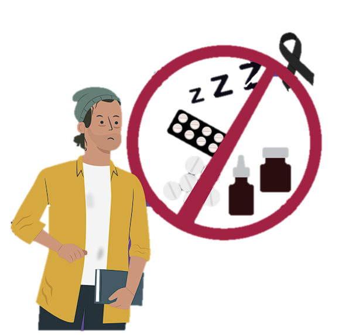

PROPÓSITO
Dar a conocer las características de las benzodiacepinas, los daños a la salud y los impactos negativos
alrededor de su consumo.
¿QUE ES?
Las benzodiacepinas son uno de los grupos de medicamentos más usados a nivel mundial por sus
efectos depresores y moduladores del Sistema Nervioso Central. Bajo prescripción médica son altamente utilizados en el tratamiento de
la ansiedad y para el trastorno del sueño. También son recetados como anticonvulsivos, ansiolíticos
y relajantes musculares.
Sin embargo, el tratamiento médico con benzodiacepinas suele administrarse por un corto periodo
y en dosis bajas debido a su alto potencial adictivo. Con el uso prolongado se puede desarrollar tolerancia, síndrome de abstinencia y
otras consecuencias no deseadas.
Por lo tanto, su venta es únicamente bajo prescripción médica
con receta controlada y a personas mayores de edad.
Las benzodiacepinas más conocidas son el clonazepam, diazepam y el alprazolam. Las unidades de emergencia hospitalaria
han reportado intoxicaciones por su uso indebido en personas menores de edad y en adultas.

Efectos durante su consumo
El principal efecto de las benzodiacepinas es la sedación que en
muchas ocasiones genera somnolencia, mareo y vértigo. Asimismo, pueden ocasionar confusión
y pérdida temporal del juicio, de
la conciencia y desmayos.
Todos estos efectos pueden ser controlados si están acompañados de un seguimiento o vigilancia médica para el tratamiento
de enfermedades de salud mental como ansiedad, depresión o psicosis.
Consecuencias irreversibles para la salud
El uso no supervisado de las benzodiacepinas puede generar dependencia. En grandes cantidades o por periodos prolongados,
el abuso de esta sustancia puede 55
causar daños a las funciones motoras, hipotensión, depresión respiratoria, coma y la muerte.
El consumo de benzodiacepinas tiene efectos no deseados como
arritmia del corazón, hiperventilación y convulsiones. Los síntomas del síndrome de abstinencia
ocasionados por detener abruptamente su consumo pueden
ser ataques de ansiedad y depresión, dolores de cuerpo, mareos y
escalofríos.
¡NO TE ARRIESGUES CON LAS DROGAS!
Ten presente que:
• La ingesta de benzodiacepinas sin supervisión médica puede inducir daños a las funciones motoras, hipotensión, depresión respiratoria, coma y muerte.
• La combinación de benzodiacepinas con otras sustancias
produce un efecto de sedación tan potente que puede ocasionar un paro respiratorio y la muerte.
• El consumo de esta sustancia afecta la capacidad de procesamiento de información (agilidad mental), altera la memoria y la concentración, y dificulta el habla.
Consecuencias legales
Desde hace más de quince años, las leyes mexicanas castigan con una pena de hasta cinco años de
cárcel y 150,000 pesos a las personas que suministren o comercialicen sin recetas cualquier tipo
de medicamento. Incluso al regalarlos se está incurriendo en un
delito.